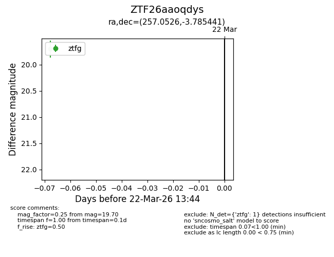
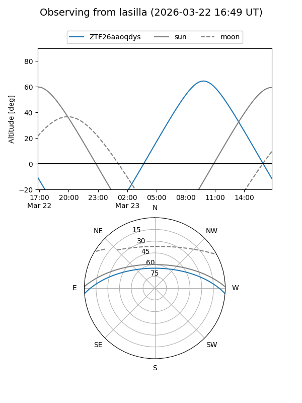
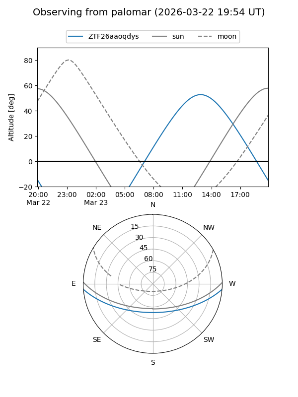

ZTF26aaoqdys
Target ZTF26aaoqdys at 2026-03-22 13:46
Aliases and brokers:
FINK: link
Lasair: link
ALeRCE: link
alt names
ZTF26aaoqdys (ztf,fink_ztf)
Coordinates:
equatorial (ra, dec) = 257.0526,-3.78544
equatorial (HMS+DMS) = 17:08:12.62,-03:47:07.59
galactic (l, b) = (16.9762,+20.88526)
Flags:
Photometry:
last ztfg=19.70
1 ztfg detections
Lightcurve

Visibility


Additional plots